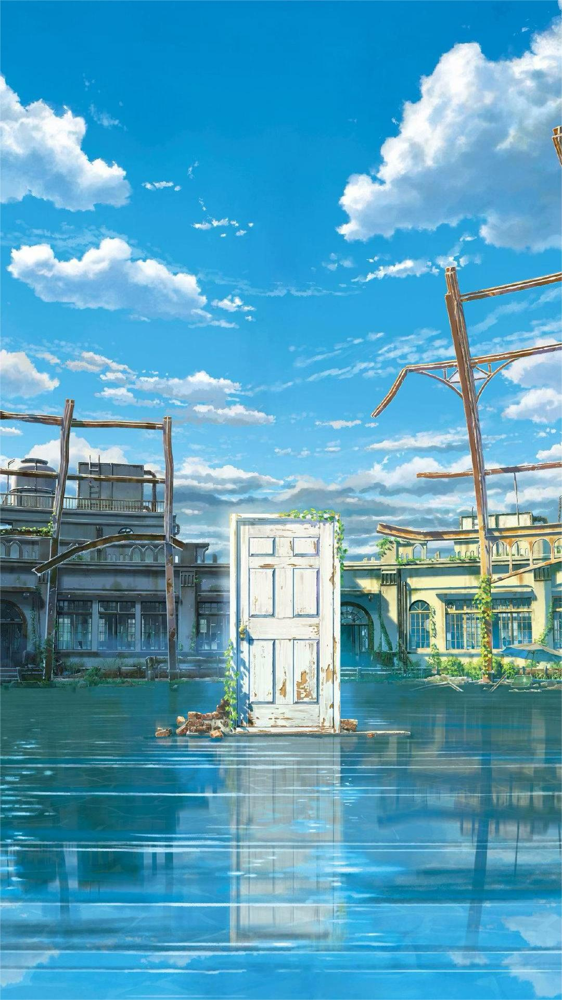
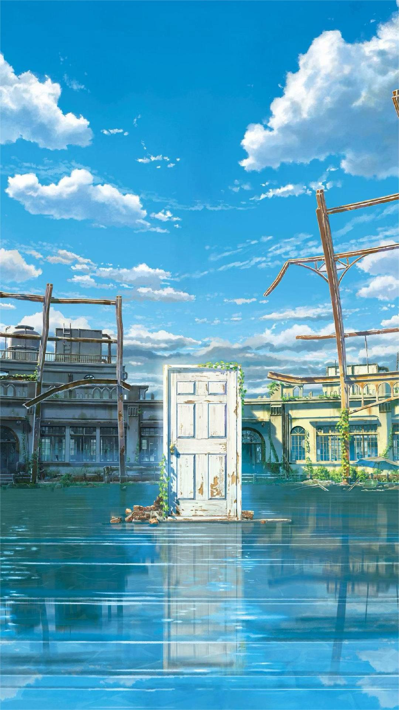
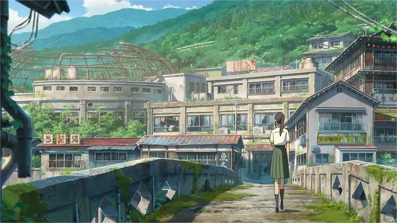
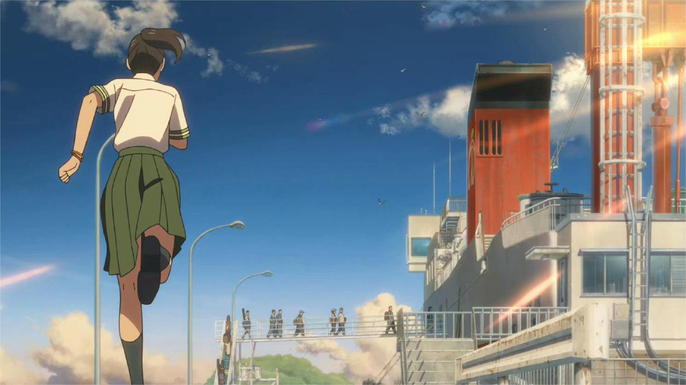
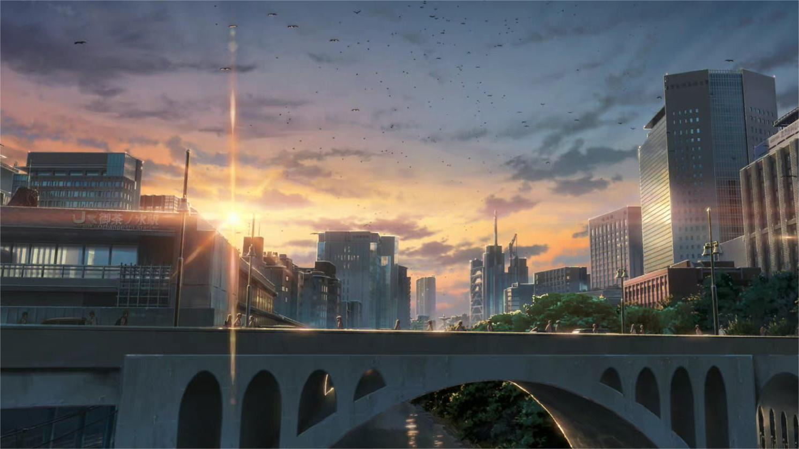
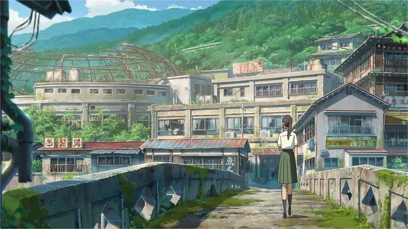
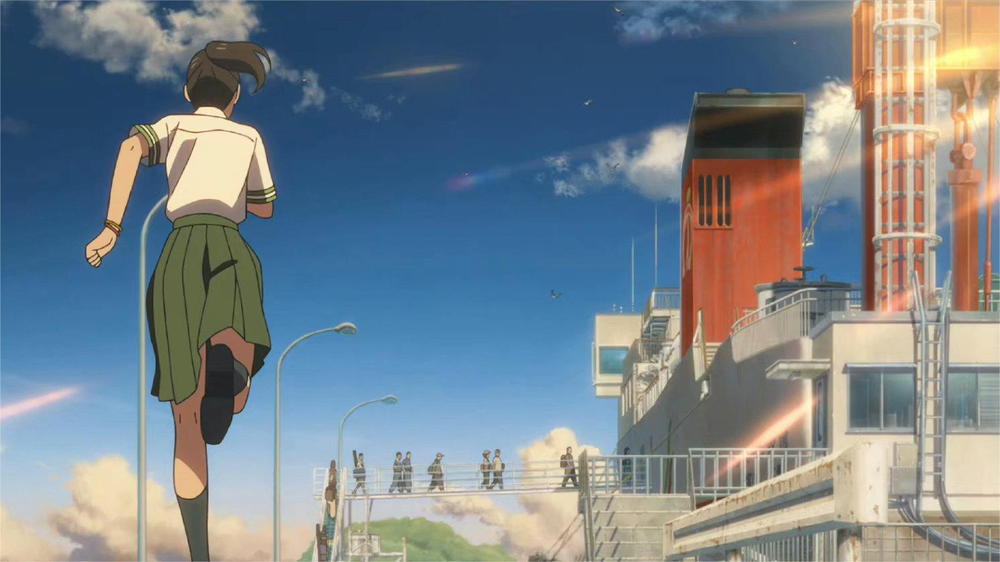
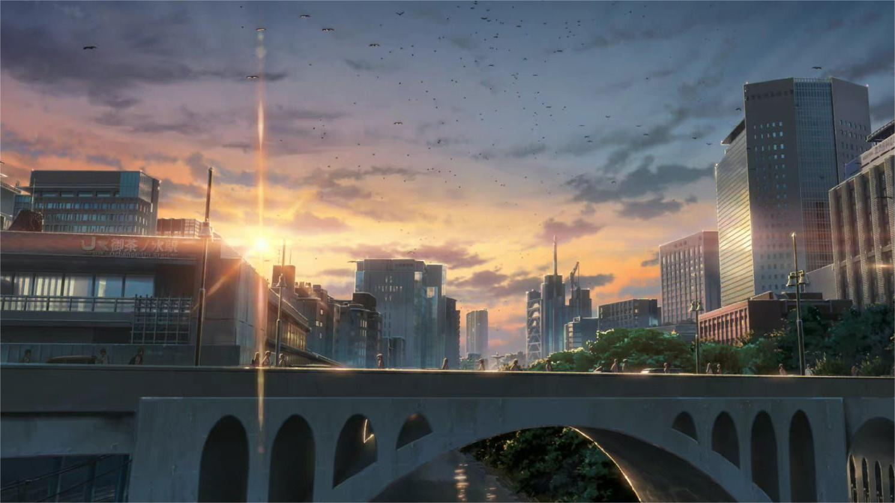

动画:门背后的璀璨星空，紫色的晚霞，一切都显得是那么的有质感，里面所有的场景都很真实，雨滴、都市，好像自己就置身于其中。
“每一帧都是壁纸”音画满分，配乐很优秀，动画效果极其棒，确实让人赏心悦目。
叙事:想象丰富瑰丽，有厄蚓、门户、往界、会说话的猫、三条腿的凳子、还有跨时空对话，元素非常丰富，想象奇幻瑰丽。
主题：影片在隐隐之中提到日本3.11大地震，铃芽的妈妈也是在这场灾难中去世了，新海诚用最温柔的方式提醒我们自然的威力也让我们永不忘记这一场人类共同的灾难。
感情:故事中描绘最好的是故乡情结和亲情，而在描写在少年情结和爱情时，显得比较牵强。不过，男主草太和铃芽那种互相扶持共同患难的爱，姨妈为了铃芽放弃自己人生的勇气，铃芽和妈妈之间爱的纽带，很难不让人动容。
作为“灾难三部曲”的完结篇，《铃芽之旅》画面精美、故事用心、情感真挚，表现出创作团队足够的诚意，同时也展现出影片导演兼编剧新海诚从事动画制作二十多年来，从作品相对小众到备受瞩目，成长为当代日本代表性动画电影导演的坚持与改变 。（澎湃新闻 评）
《铃芽之旅》之所以能产生如此强大的感召力，得益于其内涵丰富的情感诗学。相较于几部前作，新海诚《铃芽之旅》的情感叙事更加多元，所提供的情感共鸣也更为充沛。影片本身没有止步于对浓烈情感的单向抒发，而是在展现情感力量的同时，
引导观众主动进行情感召唤与重建，以主动性的情感生成对抗遗忘与灾难造成的创痛。正是将艺术叙事与现实世界的对接，使得影片与观众有了深层次的生命共振 。（南宁师范大学新闻与传播学院副教授 杜晓杰 评）
作为一部动画电影，《铃芽之旅》和《你的名字。》类似，将玄幻故事对接到现实生活之中，呈现了一部脑洞大开的超现实主义作品。同时在影片深层的内核中，自我与社会的关系成为了一条隐性主线，有着对灾难、亲情、生命等多方面的思考，
具有强烈的现实主义色彩。由于《铃芽之旅》更多呈现了人与社会的关系，所以配乐相比《你的名字。》和《天气之子》更磅礴，情感的宣泄更透彻。配乐的节奏与剧情结合得恰到好处也让影片的段落衔接更连贯、更有层次，再加上既能抓住眼球，
又能准确表达内容和传递信息的精美视觉效果，共同保证了影片的质量。《铃芽之旅》在叙事、配乐、剧情设计上都达到了很高的标准，虽然在影片的感情线上有两极分化的口碑，不过瑕不掩瑜，整体还是一部高质量的影片 。（人民网 评）
从动画制作来说，《铃芽之旅》代表了顶级的电影工业水平，观众沉浸式地跟着女主角铃芽的脚步，以更为细腻的女性视角一窥日本各地美景，同时展现旅途中的磨难与温暖。虽以“灾害”为主题，但《铃芽之旅》整体的基调轻松、明朗。
但尽管有许多轻松明快的元素，这部作品依然透露出新海诚在过往电影中那种挥之不去的淡淡的“物哀之感”，尤其是对于灾难后废墟的刻画。某种程度上，这部电影依旧没有跳脱此前的“世界系”叙事框架，同时也难逃关于“逻辑薄弱”的诟病 。（《每日经济新闻》评）
尽管这部电影确实隐喻了成长与损失，但它没有阐明其世界的规则，这有损于叙事。这部电影与新海诚的上一部作品《天气之子》一样，无法认定它是一个彻头彻尾的关于气候变化的寓言故事，还是只是一个引用真实气候灾难的虚构故事。
虽然《铃芽之旅》受了2011年东日本大地震和海啸的启发，但它并没有完全地将奇幻故事与现实的环境灾难（或是人类对自然界的无法避免的可怕行为的责任）相统一，这一切对电影的情节和解决方案来说也意义不明。不明确的角色心理
动机和模糊的魔法逻辑引发的问题多于给出的答案 。（《纽约时报》评）
怎么写比写什么更重要，相较于正面触碰“3.11”，更重要的是如何书写灾难与苦难。相较于扩展女性角色的篇幅，更重要的是如何塑造女性角色。总的来说，《铃芽之旅》更多的只能算是姿态好看。影片没有展现关于过往伤口如何操控女主的更多细节，
这些“独特性”都欠缺更详尽的展示，让我们无从得知，这趟奇幻的抗震之旅究竟撬动了女主内心的哪块硬痂，以至于女主的内心治愈在片尾只能通过说教来完成。《铃芽之旅》中，过往要么以无需质疑的传统出现（男主的职业），
要么以被美化的日常出现（废墟之声），要么以未来为诱饵而被轻易略过（女主对自己的安慰），叩访历史（遗迹）其实未被好好完成。虽然影片将故事写得像是一个公主拯救王子的故事，但并不表示这就是站在女性立场的故事。
在这个青蛙王子的故事变体中，铃芽不断被新海诚的恶趣味所摆布，一会儿是向木椅献出自己的初吻，一会儿穿着短裙坐在木椅上 。（《北京青年报》评）

.jpg "点击切换图片") 

.jpg "点击切换图片")
.jpg "点击切换图片") 




